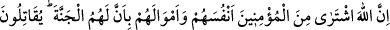
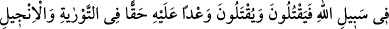
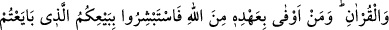
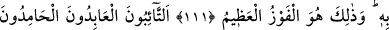
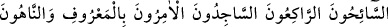
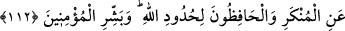

CAN VE MAL KARŞILIĞINDA
CENNET
111. Allah, müminlerden canlarını ve mallarını cennet kendilerinin olmak üzere
satın almıştır. Onlar Allah yolunda savaşırlar, öldürürler ve öldürülürler. Bu,
Allah’ın Tevrat’ta, İncil’de ve Kur’ân’da va‘dettiği gerçek bir sözdür. Kim
Allah’tan daha çok sözünde durabilir? O halde O’nunla yaptığınız bu alış verişinize
sevinin. Gerçekten bu, büyük başarıdır.
112. Tevbe edenler, ibadet edenler, hamdedenler, seyahat edenler, rükû edenler,
secde edenler, ma’rufu emredip münkerden men edenler ve Allah’ın sınırlarını
koruyanlar... İşte o müminleri müjdele.
Rivayet edildiğine göre Medine halkından yetmiş veya yetmiş dört kişiden oluşan
Ensâr, Mekke’de Akabe gecesinde Rasûlullah’a biat ettikleri vakit Abdullah b. Revâha:
“–Yâ Rasûlallah! Rabbin için ve kendin için dilediğin şartı koş.” dedi. Rasûlullah
(a.s.):
“–Rabbim için, O’na ibadet etmenizi ve O’na hiçbir şeyi şirk koşmamanızı şart
koştum. Kendim için de canlarınızı ve mallarınızı koruyup savunduğunuz gibi beni
koruyup savunmanızı şart koştum.” buyurdu.
Abdullah b. Revâha:
“–Biz bunu yaparsak, bize ne var?” diye sordu.
Rasûlullah (s.a.),
“–Cennet.” cevabını verdi.
Orada bulunan Ensâr: “Kârlı bir alış-veriş! Biz bu anlaşmayı ne fesh ederiz, ne de
bozarız.” dediler.[288] İşte bunun üzerine bu âyet nâzil oldu.
Ezel gününde seninle alış veriş yaptık